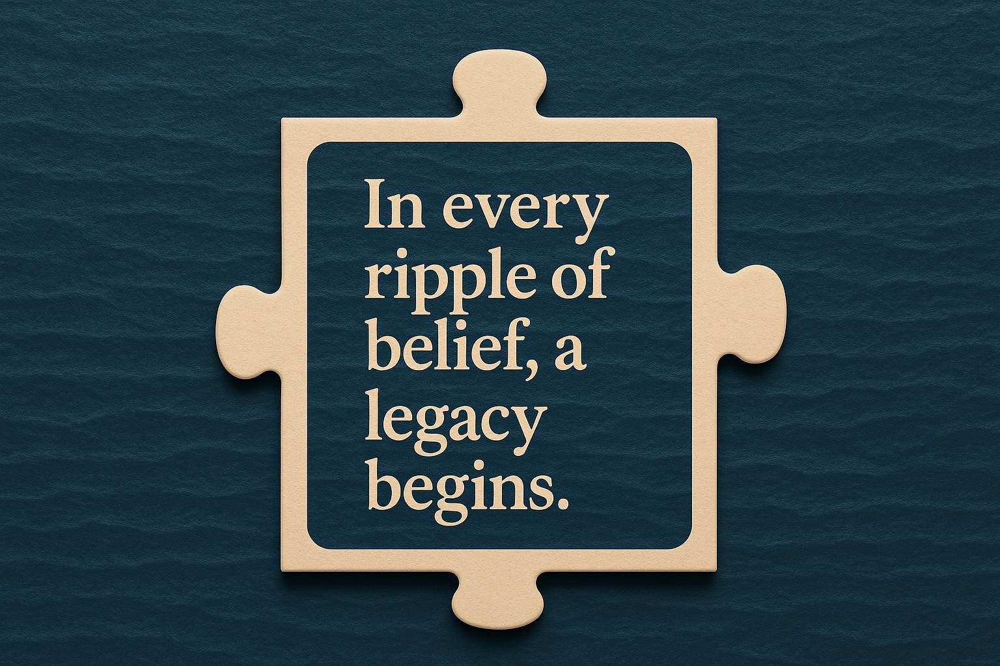

목적지는 숫자가 아닌 가치에 있다.
많은 항해자들이 도달한 거리,
얻은 양,
쌓인 수익이라는 숫자만을 목적지로 삼습니다.
그러나 OrcaX의 항해는 달랐습니다.
우리는 이 여정을 숫자가 아닌 ‘의미’로 채우고자 했습니다.
그 숫자들이 때로는 오르고, 때로는 떨어지더라도
우리가 나아가는 방향이 가치 위에 있다면,
그 항해는 절대 헛되지 않습니다.
OrcaX는 단순한 상승 곡선을 쫓는 프로젝트가 아닙니다.
이 항해는 지속 가능하고 실체 있는 가치,
그리고 사람을 중심에 둔 비전을 향해 나아갑니다.
